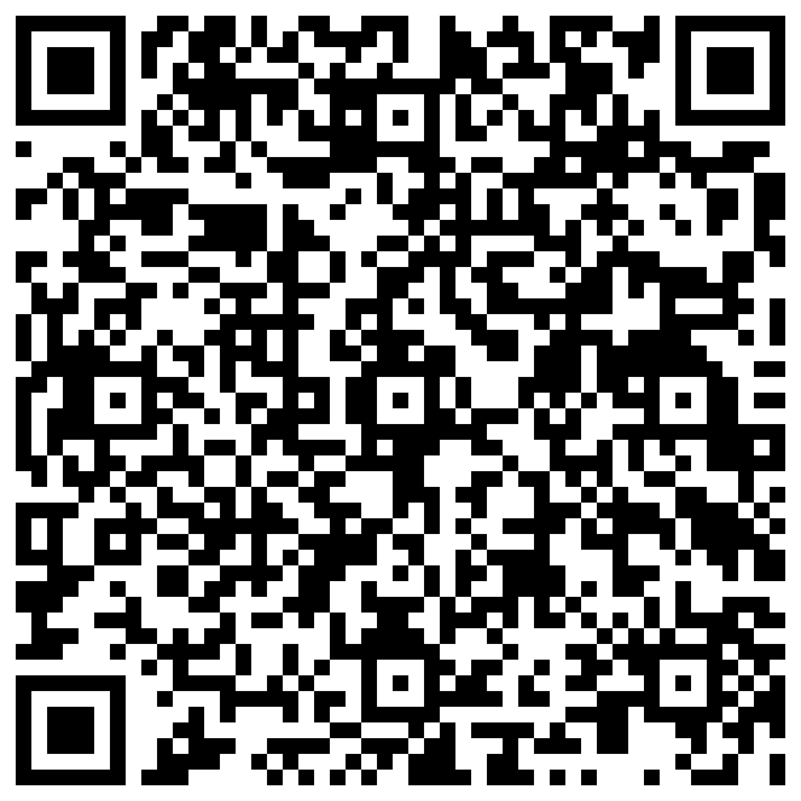

Ékri kréyòl asi téléfòn aw !
Votre téléphone refuse tous les mots créoles quand vous écrivez en kréyòl.
Vous hésitez sur l'orthographe à chaque message.
Votre kréyòl écrit est un peu rouillé.
Des suggestions immédiates, tirées des grands textes kréyòl.
Des propositions qui tiennent compte des mots déjà écrits.
Gratuit · Open source (MIT) · Zéro publicité · 100 % hors ligne



📲 Flashez le code, c'est gratuit
Klavyé Kréyòl Karukera est un clavier conçu pour répondre à un besoin simple : permettre aux Guadeloupéens d'écrire facilement en kréyòl Gwadloup sur leur téléphone, avec fluidité, authenticité et fierté.
Maké an bèl Kréyòl asi téléfòn a-w.
Potomitan™·Créé par un Guadeloupéen pour les Guadeloupéens ·https://potomitan.io/·contact@potomitan.io